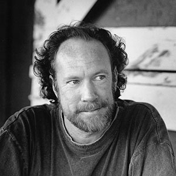

Vince Welnick
When Brent Mydland died, the Dead cast about for a new keyboard player/high harmony vocalist, and soon found Vince Welnick. After moving his hometown band to San Francisco Bay Area where it became that notorious theater of the perverse rock band-freak show called The Tubes, and having a fallout with Todd Rungren, he was looking for something else the moment the Dead came calling.